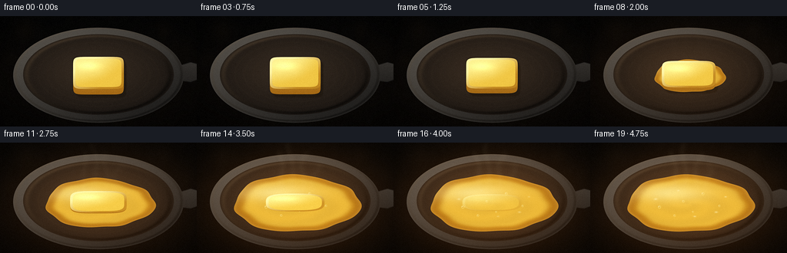
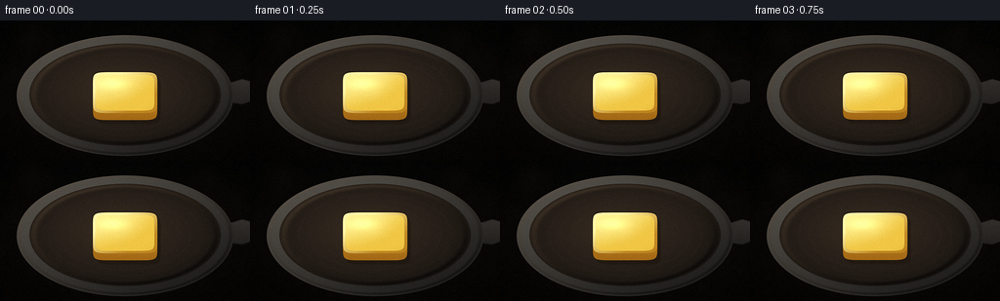
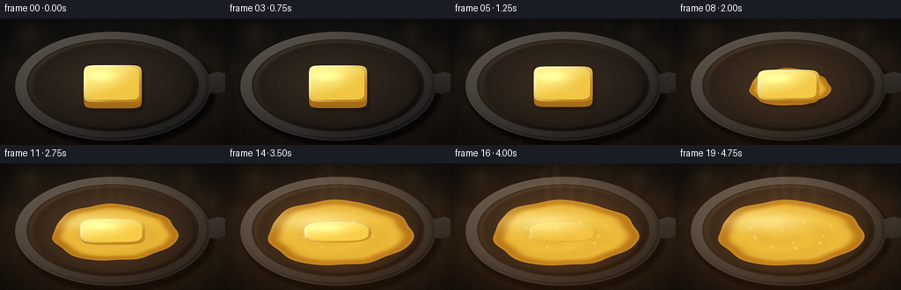
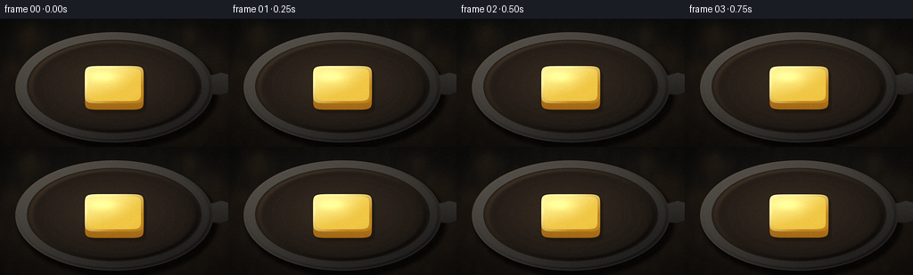

CODING AGENTS AS PIXEL WORLD MODELS
traex/DeepSeek-V4.1-Flash · phygen_098
点击播放 · 原生 RGB 像素
逐轮保存的候选
回放视频、检查图与代码变化。
每份候选均可单独播放。实际图片检查记录在下方工具轨迹中。
候选 01播放与检查图
点击播放 · 原生 RGB 像素


展开代码变化
--- 上一保存版本
+++ 本次保存版本
@@ -0,0 +1,443 @@
+from pathlib import Path
+
+import numpy as np
+from PIL import Image, ImageDraw, ImageFilter
+
+import artifact_io
+
+
+ROOT = Path(__file__).resolve().parent
+WIDTH = 256
+HEIGHT = 144
+FRAMES = 20
+SUPERSAMPLE = 4
+W = WIDTH * SUPERSAMPLE
+H = HEIGHT * SUPERSAMPLE
+
+
+def smoothstep(edge0, edge1, value):
+ x = np.clip((value - edge0) / (edge1 - edge0), 0.0, 1.0)
+ return x * x * (3.0 - 2.0 * x)
+
+
+def mix(a, b, amount):
+ return a + (b - a) * amount
+
+
+def blend(base, color, alpha):
+ alpha = np.clip(alpha, 0.0, 1.0)[..., None]
+ return base * (1.0 - alpha) + color * alpha
+
+
+def soft_ellipse_field(x, y, cx, cy, rx, ry):
+ return 1.0 - np.sqrt(((x - cx) / rx) ** 2 + ((y - cy) / ry) ** 2)
+
+
+def ellipse_alpha(x, y, cx, cy, rx, ry, softness=1.0):
+ field = soft_ellipse_field(x, y, cx, cy, rx, ry)
+ return np.clip(0.5 + field * min(rx, ry) * SUPERSAMPLE / softness, 0.0, 1.0)
+
+
+def superellipse_field(x, y, cx, cy, rx, ry, exponent):
+ u = np.abs((x - cx) / rx)
+ v = np.abs((y - cy) / ry)
+ return 1.0 - (u**exponent + v**exponent) ** (1.0 / exponent)
+
+
+def superellipse_alpha(x, y, cx, cy, rx, ry, exponent, softness=1.0):
+ field = superellipse_field(x, y, cx, cy, rx, ry, exponent)
+ return np.clip(0.5 + field * min(rx, ry) * SUPERSAMPLE / softness, 0.0, 1.0)
+
+
+def blurred_alpha(mask, sigma):
+ image = Image.fromarray(np.uint8(np.clip(mask, 0.0, 1.0) * 255.0), "L")
+ return np.asarray(image.filter(ImageFilter.GaussianBlur(sigma)), dtype=np.float32) / 255.0
+
+
+def shifted_mask(mask, dx, dy):
+ image = Image.fromarray(np.uint8(np.clip(mask, 0.0, 1.0) * 255.0), "L")
+ shifted = Image.new("L", image.size)
+ shifted.paste(image, (int(round(dx * SUPERSAMPLE)), int(round(dy * SUPERSAMPLE))))
+ return np.asarray(shifted, dtype=np.float32) / 255.0
+
+
+def polygon_mask(points, blur=0.0):
+ image = Image.new("L", (W, H), 0)
+ draw = ImageDraw.Draw(image)
+ draw.polygon([(int(x * SUPERSAMPLE), int(y * SUPERSAMPLE)) for x, y in points], fill=255)
+ if blur > 0:
+ image = image.filter(ImageFilter.GaussianBlur(blur * SUPERSAMPLE))
+ return np.asarray(image, dtype=np.float32) / 255.0
+
+
+def color_field(rgb):
+ return np.broadcast_to(np.asarray(rgb, dtype=np.float32), (H, W, 3))
+
+
+def gaussian_blob(x, y, cx, cy, rx, ry):
+ return np.exp(-0.5 * (((x - cx) / rx) ** 2 + ((y - cy) / ry) ** 2))
+
+
+def make_background(x, y, noise):
+ yn = y / HEIGHT
+ xn = x / WIDTH
+
+ top = np.array([22.0, 24.0, 24.0], dtype=np.float32)
+ middle = np.array([38.0, 31.0, 26.0], dtype=np.float32)
+ bottom = np.array([28.0, 24.0, 21.0], dtype=np.float32)
+ upper = smoothstep(0.0, 0.58, yn)[..., None]
+ lower = smoothstep(0.55, 1.0, yn)[..., None]
+ bg = top * (1.0 - upper) + middle * upper
+ bg = bg * (1.0 - lower) + bottom * lower
+
+ warm_pool = gaussian_blob(x, y, 148, 93, 112, 68)
+ bg += warm_pool[..., None] * np.array([20.0, 13.0, 6.0], dtype=np.float32)
+
+ bokeh = np.zeros((H, W), dtype=np.float32)
+ for cx, cy, radius, strength in (
+ (32, 18, 11, 0.45),
+ (213, 16, 8, 0.32),
+ (237, 42, 15, 0.16),
+ (15, 55, 7, 0.20),
+ ):
+ bokeh += strength * gaussian_blob(x, y, cx, cy, radius, radius)
+ bg += np.clip(bokeh, 0.0, 0.8)[..., None] * np.array([75.0, 50.0, 25.0], dtype=np.float32)
+
+ counter_lines = 0.5 + 0.5 * np.sin(x * 0.35 + y * 0.07 + 1.2)
+ counter_lines *= 0.5 + 0.5 * np.sin(x * 0.09 - y * 0.18)
+ bg += (counter_lines - 0.45)[..., None] * np.array([5.0, 4.0, 3.0], dtype=np.float32)
+
+ bg += noise[..., None] * 2.2
+ radial = np.sqrt(((x - 128.0) / 151.0) ** 2 + ((y - 76.0) / 88.0) ** 2)
+ vignette = np.clip(1.0 - 0.38 * radial**1.7, 0.58, 1.0)
+ return bg * vignette[..., None]
+
+
+def make_pan(x, y, noise):
+ cx, cy = 128.0, 76.0
+ outer_rx, outer_ry = 111.0, 62.0
+ inner_rx, inner_ry = 98.0, 52.5
+
+ base = np.zeros((H, W, 3), dtype=np.float32)
+
+ outer = ellipse_alpha(x, y, cx, cy + 1.0, outer_rx, outer_ry)
+ inner = ellipse_alpha(x, y, cx, cy, inner_rx, inner_ry)
+ shadow = blurred_alpha(ellipse_alpha(x, y, cx + 4.0, cy + 7.0, outer_rx + 2.0, outer_ry + 2.0), 8.0)
+ shadow *= 0.68
+ base = blend(base, np.zeros_like(base), shadow)
+
+ handle = polygon_mask(
+ [
+ (218.0, 69.0),
+ (248.0, 60.0),
+ (259.0, 63.0),
+ (259.0, 82.0),
+ (248.0, 86.0),
+ (218.0, 82.0),
+ ],
+ blur=0.5,
+ )
+ handle_color = np.empty_like(base)
+ handle_shade = np.clip(0.52 - 0.22 * ((y - 68.0) / 20.0), 0.15, 0.75)
+ for channel, low, high in ((0, 18.0, 70.0), (1, 17.0, 66.0), (2, 16.0, 61.0)):
+ handle_color[..., channel] = mix(low, high, handle_shade)
+ base = blend(base, handle_color, handle)
+
+ angle = np.arctan2((y - cy) / outer_ry, (x - cx) / outer_rx)
+ rim_light = np.clip(0.48 + 0.34 * np.cos(angle + 2.35), 0.08, 0.90)
+ iron = np.empty_like(base)
+ for channel, low, high in ((0, 20.0, 78.0), (1, 19.0, 72.0), (2, 18.0, 65.0)):
+ iron[..., channel] = mix(low, high, rim_light)
+ iron += noise[..., None] * 3.0
+ base = blend(base, iron, outer)
+
+ ring = np.clip(outer - inner, 0.0, 1.0)
+ bevel = np.clip(0.5 + 0.34 * np.cos(angle + 2.25), 0.10, 1.0)
+ ring_color = np.empty_like(base)
+ for channel, low, high in ((0, 24.0, 91.0), (1, 23.0, 86.0), (2, 22.0, 79.0)):
+ ring_color[..., channel] = mix(low, high, bevel)
+ ring_color += noise[..., None] * 5.0
+ base = blend(base, ring_color, ring)
+
+ radial = np.sqrt(((x - cx) / inner_rx) ** 2 + ((y - cy) / inner_ry) ** 2)
+ interior_light = np.clip(0.78 - 0.62 * radial + 0.08 * np.cos(angle + 2.1), 0.08, 0.82)
+ interior = np.empty_like(base)
+ for channel, low, high in ((0, 24.0, 67.0), (1, 20.0, 53.0), (2, 17.0, 40.0)):
+ interior[..., channel] = mix(low, high, interior_light)
+ interior += noise[..., None] * 3.2
+ base = blend(base, interior, inner)
+
+ inner_edge = np.exp(-((radial - 0.955) / 0.035) ** 2) * inner
+ edge_light = np.clip(0.45 + 0.45 * np.cos(angle + 2.2), 0.05, 0.95)
+ inner_edge_color = color_field([83.0, 67.0, 50.0]) * edge_light[..., None]
+ base = blend(base, inner_edge_color, inner_edge * 0.58)
+
+ outer_edge = np.exp(-((np.sqrt(((x - cx) / outer_rx) ** 2 + ((y - cy) / outer_ry) ** 2) - 0.975) / 0.018) ** 2)
+ outer_edge *= outer
+ outer_edge_color = color_field([103.0, 91.0, 76.0]) * edge_light[..., None]
+ base = blend(base, outer_edge_color, outer_edge * 0.46)
+
+ for ring_r in (0.56, 0.68, 0.80):
+ line = np.exp(-((radial - ring_r) / 0.012) ** 2) * inner
+ base = blend(base, color_field([55.0, 44.0, 32.0]), line * 0.13)
+
+ return base
+
+
+def butter_solid_params(t):
+ melt = smoothstep(0.0, 1.0, t)
+ cx = 128.0
+ cy = 74.0 + 4.2 * melt
+ rx = 33.0 + 5.5 * melt
+ ry = 21.0 - 10.2 * melt
+ exponent = 8.0 - 5.1 * melt
+ side_height = max(0.25, 7.2 * (1.0 - melt) ** 1.35)
+ opacity = 1.0 - smoothstep(0.84, 1.0, t)
+ return cx, cy, rx, ry, exponent, side_height, opacity
+
+
+def render_butter(base, x, y, t, noise, fine_noise):
+ cx, cy, rx, ry, exponent, side_height, solid_opacity = butter_solid_params(t)
+ melt = smoothstep(0.0, 1.0, t)
+
+ top = superellipse_alpha(x, y, cx, cy, rx, ry, exponent, softness=0.82)
+ bottom = superellipse_alpha(x, y, cx, cy + side_height, rx, ry, exponent, softness=0.82)
+ silhouette = np.maximum(top, bottom)
+ side = np.clip(silhouette - top, 0.0, 1.0)
+
+ shadow = blurred_alpha(silhouette, 4.2)
+ shadow = np.maximum(shadow, blurred_alpha(shifted_mask(silhouette, 3.4, 4.3), 2.0))
+ base = blend(base, color_field([28.0, 20.0, 11.0]), shadow * (0.46 * solid_opacity + 0.08))
+
+ # The melted pool grows outward before the solid core disappears.
+ onset = smoothstep(0.03, 0.86, t)
+ pool_rx = mix(18.0, 82.0, onset)
+ pool_ry = mix(9.0, 37.0, onset)
+ pool_cx = 128.0 + 1.5 * np.sin(t * 2.1)
+ pool_cy = 77.5 + 2.0 * melt
+ theta = np.arctan2((y - pool_cy) / pool_ry, (x - pool_cx) / pool_rx)
+ boundary = (
+ 1.0
+ + 0.032 * np.sin(3.0 * theta + 0.7 + t * 0.5)
+ + 0.020 * np.sin(7.0 * theta - 0.4)
+ + 0.010 * np.sin(11.0 * theta + 1.4)
+ )
+ pool_rho = np.sqrt(((x - pool_cx) / pool_rx) ** 2 + ((y - pool_cy) / pool_ry) ** 2) / boundary
+ pool_field = 1.0 - pool_rho
+ pool_alpha = np.clip(0.5 + pool_field * min(pool_rx, pool_ry) * SUPERSAMPLE / 0.9, 0.0, 1.0)
+ pool_alpha *= smoothstep(0.0, 0.08, onset)
+
+ # Small gravity-fed lobes make the puddle feel poured rather than perfectly elliptical.
+ lobe_alpha = np.zeros_like(pool_alpha)
+ for angle, distance, size in ((-2.18, 0.76, 5.2), (-1.10, 0.83, 4.4), (2.72, 0.79, 4.1)):
+ amount = smoothstep(0.12, 0.78, onset)
+ lx = pool_cx + np.cos(angle) * pool_rx * distance
+ ly = pool_cy - np.sin(angle) * pool_ry * distance
+ lobe = ellipse_alpha(
+ x,
+ y,
+ lx,
+ ly,
+ max(0.8, size * amount),
+ max(0.8, size * 0.62 * amount),
+ softness=1.0,
+ )
+ lobe_alpha = np.maximum(lobe_alpha, lobe * amount)
+ pool_alpha = np.maximum(pool_alpha, lobe_alpha * 0.88)
+
+ pool_depth = np.clip(1.0 - pool_rho, 0.0, 1.0)
+ pool_light = smoothstep(0.0, 0.26, pool_depth)
+ pool_color = np.empty_like(base)
+ for channel, rim, center, light in (
+ (0, 169.0, 231.0, 255.0),
+ (1, 102.0, 171.0, 226.0),
+ (2, 15.0, 40.0, 105.0),
+ ):
+ pool_color[..., channel] = mix(rim, center, pool_light)
+ pool_color[..., channel] = mix(pool_color[..., channel], light, smoothstep(0.42, 0.95, pool_light) * 0.22)
+
+ ripple = 0.5 + 0.5 * np.sin(13.5 * pool_rho - 2.0 * theta + 0.5 + t * 4.5)
+ pool_color += (ripple - 0.5)[..., None] * np.array([9.0, 7.0, 2.0], dtype=np.float32)
+ pool_color += (fine_noise * 0.5 + noise * 0.5)[..., None] * 3.2
+ pool_color = np.clip(pool_color, 0.0, 255.0)
+ base = blend(base, pool_color, pool_alpha * 0.94)
+
+ # Golden meniscus catches the warm key light.
+ meniscus = np.exp(-(pool_depth / 0.055) ** 2) * pool_alpha
+ meniscus_color = color_field([255.0, 211.0, 91.0])
+ base = blend(base, meniscus_color, meniscus * 0.24)
+
+ # Broad satin reflection on the liquid.
+ pool_u = (x - pool_cx) / pool_rx
+ pool_v = (y - pool_cy) / pool_ry
+ liquid_spec = np.exp(-0.5 * (((pool_u + 0.32) / 0.42) ** 2 + ((pool_v + 0.38) / 0.22) ** 2))
+ liquid_spec *= pool_alpha * (0.28 + 0.32 * onset)
+ base = blend(base, color_field([255.0, 245.0, 174.0]), liquid_spec)
+
+ side_shade = np.clip(0.58 - 0.24 * ((y - cy) / max(ry, 1.0)), 0.16, 0.86)
+ side_color = np.empty_like(base)
+ for channel, low, high in ((0, 139.0, 229.0), (1, 82.0, 166.0), (2, 13.0, 47.0)):
+ side_color[..., channel] = mix(low, high, side_shade)
+ side_color += fine_noise[..., None] * 5.0
+ base = blend(base, side_color, side * solid_opacity)
+
+ u = (x - cx) / rx
+ v = (y - cy) / ry
+ radial = np.clip(np.sqrt(u * u + v * v), 0.0, 1.25)
+ light = np.clip(0.72 - 0.16 * u - 0.21 * v + 0.09 * (1.0 - radial), 0.0, 1.0)
+ top_color = np.empty_like(base)
+ for channel, dark, middle, light_color in (
+ (0, 202.0, 241.0, 255.0),
+ (1, 142.0, 199.0, 241.0),
+ (2, 31.0, 69.0, 145.0),
+ ):
+ low_mix = smoothstep(0.0, 0.52, light)
+ top_color[..., channel] = mix(dark, middle, low_mix)
+ top_color[..., channel] = mix(top_color[..., channel], light_color, smoothstep(0.62, 1.0, light))
+
+ top_color += fine_noise[..., None] * 4.0
+ ridges = (1.0 - melt) * 0.018 * np.sin(18.0 * u + 0.7 * np.sin(5.0 * v))
+ top_color += ridges[..., None] * np.array([14.0, 10.0, 3.0], dtype=np.float32)
+
+ specular = np.exp(-0.5 * (((u + 0.35) / 0.30) ** 2 + ((v + 0.42) / 0.18) ** 2))
+ top_color += specular[..., None] * np.array([31.0, 35.0, 29.0], dtype=np.float32)
+ top_color = np.clip(top_color, 0.0, 255.0)
+ base = blend(base, top_color, top * solid_opacity)
+
+ eroded = superellipse_alpha(x, y, cx, cy, rx * 0.91, ry * 0.88, exponent, softness=0.70)
+ bevel = np.clip(top - eroded, 0.0, 1.0)
+ bevel_light = np.clip(0.50 - 0.50 * u - 0.50 * v, 0.0, 1.0)
+ bevel_color = mix(
+ np.array([173.0, 111.0, 20.0], dtype=np.float32),
+ np.array([255.0, 247.0, 176.0], dtype=np.float32),
+ bevel_light[..., None],
+ )
+ base = blend(base, bevel_color, bevel * solid_opacity * 0.72)
+
+ # A few late-stage milk solids and bubbles sell the phase change.
+ bubble_specs = (
+ (-0.48, 0.12, 1.7, 0.56),
+ (-0.24, 0.42, 1.3, 0.64),
+ (0.21, -0.35, 1.6, 0.60),
+ (0.47, 0.08, 1.2, 0.71),
+ (0.05, 0.29, 1.0, 0.76),
+ (-0.10, -0.08, 1.4, 0.80),
+ )
+ for bu, bv, radius, appear in bubble_specs:
+ amount = smoothstep(appear, min(0.96, appear + 0.14), t)
+ if amount <= 0.0:
+ continue
+ bx = pool_cx + bu * pool_rx
+ by = pool_cy + bv * pool_ry
+ rr = max(0.55, radius * amount)
+ distance = np.sqrt(((x - bx) / rr) ** 2 + ((y - by) / rr) ** 2)
+ ring = np.exp(-((distance - 1.0) / 0.22) ** 2) * pool_alpha
+ base = blend(base, color_field([255.0, 236.0, 139.0]), ring * amount * 0.52)
+ glint = gaussian_blob(x, y, bx - rr * 0.32, by - rr * 0.30, rr * 0.24, rr * 0.20)
+ base = blend(base, color_field([255.0, 252.0, 219.0]), glint * amount * 0.72)
+
+ solid_flecks = (
+ (-0.54, -0.16, 1.6, 0.78),
+ (0.42, 0.30, 1.4, 0.82),
+ (0.08, 0.45, 1.2, 0.87),
+ (-0.18, -0.46, 1.1, 0.90),
+ (0.57, -0.24, 1.0, 0.86),
+ )
+ for fu, fv, radius, appear in solid_flecks:
+ amount = smoothstep(appear, 1.0, t)
+ if amount <= 0.0:
+ continue
+ fx = pool_cx + fu * pool_rx
+ fy = pool_cy + fv * pool_ry
+ flake = gaussian_blob(x, y, fx, fy, radius, radius * 0.55)
+ base = blend(base, color_field([255.0, 239.0, 173.0]), flake * amount * 0.58)
+
+ return base
+
+
+def render_steam(frame, t):
+ amount = smoothstep(0.22, 0.94, t)
+ if amount <= 0.0:
+ return frame
+
+ image = Image.new("L", (W, H), 0)
+ draw = ImageDraw.Draw(image)
+ phase = t * 5.0
+ for index, (base_x, start_y, length, alpha) in enumerate(
+ (
+ (111.0, 60.0, 48.0, 54.0),
+ (124.0, 56.0, 55.0, 46.0),
+ (139.0, 59.0, 46.0, 42.0),
+ (151.0, 63.0, 36.0, 32.0),
+ )
+ ):
+ points = []
+ for step in range(18):
+ q = step / 17.0
+ py = start_y - length * q
+ px = base_x + (4.0 + index * 1.2) * np.sin(phase + q * 5.8 + index * 1.7) * q
+ px += (index - 1.5) * 1.8 * q
+ points.append((px * SUPERSAMPLE, py * SUPERSAMPLE))
+ width = int((4.0 + index * 0.7) * SUPERSAMPLE)
+ draw.line(points, fill=int(alpha * amount), width=width, joint="curve")
+ image = image.filter(ImageFilter.GaussianBlur(2.4 * SUPERSAMPLE))
+ alpha = np.asarray(image, dtype=np.float32) / 255.0
+ steam_color = color_field([246.0, 225.0, 182.0])
+ return blend(frame, steam_color, alpha * 0.28)
+
+
+def render_heat(frame, x, y, t):
+ heat = smoothstep(0.04, 1.0, t)
+ glow = gaussian_blob(x, y, 128.0, 80.0, 71.0, 44.0)
+ glow *= heat * 0.22
+ warm = color_field([255.0, 124.0, 25.0])
+ frame = 255.0 - (255.0 - frame) * (1.0 - glow[..., None] * warm / 255.0)
+ background_warm = gaussian_blob(x, y, 128.0, 72.0, 123.0, 77.0) * heat
+ frame += background_warm[..., None] * np.array([7.0, 4.0, 1.0], dtype=np.float32)
+ return frame
+
+
+def finish_frame(frame, rng):
+ frame = np.clip(frame, 0.0, 255.0).astype(np.uint8)
+ image = Image.fromarray(frame, "RGB")
+ image = image.resize((WIDTH, HEIGHT), Image.Resampling.LANCZOS)
+ image = image.filter(ImageFilter.UnsharpMask(radius=0.75, percent=26, threshold=2))
+ result = np.asarray(image, dtype=np.float32)
+ result += rng.normal(0.0, 1.15, size=(HEIGHT, WIDTH, 1))
+ result = np.clip(result, 0.0, 255.0).astype(np.uint8)
+ return result
+
+
+def main():
+ rng = np.random.default_rng(2098)
+ y, x = np.mgrid[0:H, 0:W].astype(np.float32)
+ x /= SUPERSAMPLE
+ y /= SUPERSAMPLE
+
+ coarse_noise = rng.normal(0.0, 1.0, size=(H, W)).astype(np.float32)
+ noise_range = float(coarse_noise.max() - coarse_noise.min())
+ coarse_noise = blurred_alpha((coarse_noise - coarse_noise.min()) / (noise_range + 1e-6), 1.4)
+ coarse_noise = (coarse_noise - 0.5) * 1.8
+
+ fine_noise = rng.normal(0.0, 1.0, size=(H, W)).astype(np.float32)
+ fine_noise = (fine_noise - fine_noise.mean()) / (fine_noise.std() + 1e-6)
+
+ background = make_background(x, y, coarse_noise)
+ pan = make_pan(x, y, coarse_noise)
+ scene = np.maximum(background * 0.24, pan)
+
+ frames = []
+ for index in range(FRAMES):
+ u = index / (FRAMES - 1)
+ t = smoothstep(0.0, 1.0, u) ** 0.93
+ frame = scene.copy()
+ frame = render_butter(frame, x, y, t, coarse_noise, fine_noise)
+ frame = render_steam(frame, t)
+ frame = render_heat(frame, x, y, t)
+ frames.append(finish_frame(frame, rng))
+
+ artifact_io.save(frames, ROOT)
+
+
+if __name__ == "__main__":
+ main()
候选 02播放与检查图
点击播放 · 原生 RGB 像素


展开代码变化
--- 上一保存版本
+++ 本次保存版本
@@ -181,7 +181,8 @@
line = np.exp(-((radial - ring_r) / 0.012) ** 2) * inner
base = blend(base, color_field([55.0, 44.0, 32.0]), line * 0.13)
- return base
+ coverage = np.maximum(np.maximum(outer, handle), shadow)
+ return base, coverage
def butter_solid_params(t):
@@ -423,8 +424,8 @@
fine_noise = (fine_noise - fine_noise.mean()) / (fine_noise.std() + 1e-6)
background = make_background(x, y, coarse_noise)
- pan = make_pan(x, y, coarse_noise)
- scene = np.maximum(background * 0.24, pan)
+ pan, pan_coverage = make_pan(x, y, coarse_noise)
+ scene = blend(background * 0.72, pan, pan_coverage)
frames = []
for index in range(FRAMES):
可观测工具轨迹
实际执行的命令与返回图片。
命令 1exit 0
/bin/bash -c "pwd && rg --files -g 'prompt.txt' -g 'GENERATION_RULES.md' -g 'task_spec.json' -g '"'!**/.git/**'"'"
命令 2exit 0
/bin/bash -c "find . -maxdepth 2 -type f -not -path './.git/*' -printf '%p\\n' | sort | head -200"
命令 3exit 0
/bin/bash -c 'cat prompt.txt'
命令 4exit 0
/bin/bash -c 'cat GENERATION_RULES.md'
命令 5exit 0
/bin/bash -c 'cat task_spec.json'
命令 6exit 0
/bin/bash -c "sed -n '1,240p' artifact_io.py && printf '\\n--- player template ---\\n' && sed -n '1,240p' player_template.html"
命令 7exit 0
/bin/bash -c "python - <<'PY'
import numpy, PIL
print('numpy', numpy.__version__)
print('PIL', PIL.__version__)
PY"命令 8exit 1
/bin/bash -c 'python generate.py'
命令 9exit 0
/bin/bash -c 'python generate.py'
命令 10exit 0
/bin/bash -c "python - <<'PY'
from PIL import Image
im=Image.open('inspection.png')
print(im.size)
im.resize((im.width*2, im.height*2), Image.Resampling.NEAREST).save('.tmp/inspection_2x.png')
PY"命令 11exit 0
/bin/bash -c 'command -v chafa || command -v viu || command -v jp2 || true'
命令 12exit 0
/bin/bash -c 'command -v img2txt || command -v viu || command -v kitty || command -v jp2 || command -v viu || command -v tiv || true'
命令 13exit 0
/bin/bash -c "python - <<'PY'
from PIL import Image, ImageOps
import numpy as np
for fn in ['frames/00.png','frames/04.png','frames/08.png','frames/12.png','frames/16.png','frames/19.png']:
im=Image.open(fn).convert('L').resize((64,36))
a=np.asarray(im)
chars=' .:-=+*#%@'
print('\\n'+fn)
for row in a:
print(''.join(chars[min(9,int(v)*10//256)] for v in row))
PY"命令 14exit 0
/bin/bash -c "python - <<'PY'
from PIL import Image
import numpy as np
for i in [0,4,8,12,16,19]:
a=np.array(Image.open(f'frames/{i:02d}.png'))
print(i, 'mean',a.mean((0,1)).round(1), 'p95',np.percentile(a,95,axis=(0,1)).round(1), 'center',a[74,128], 'butter?', a[64,128], 'pool edge',a[82,200], 'bg',a[15,128])
PY"命令 15exit 0
/bin/bash -c "python - <<'PY'
from PIL import Image
im=Image.open('frames/00.png').convert('RGB').resize((128,72))
# ANSI truecolor half-block preview, 128 columns x 36 rows
for y in range(0,72,2):
line=[]
for x in range(128):
r1,g1,b1=im.getpixel((x,y)); r2,g2,b2=im.getpixel((x,y+1))
line.append(f'\\x1b[38;2;{r1};{g1};{b1}m\\x1b[48;2;{r2};{g2};{b2}mâ')
print(''.join(line)+'\\x1b[0m')
PY"命令 16exit 0
/bin/bash -c "python - <<'PY'
from PIL import Image
import numpy as np
im=Image.open('inspection.png')
# split top row of four frames, keep at native then enlarge
for i,box in enumerate([(0,21,256,165),(256,21,512,165),(512,21,768,165),(768,21,1024,165)]):
im.crop(box).resize((768,432),Image.Resampling.NEAREST).save(f'.tmp/frame_{i}.png')
PY"命令 17exit 0
/bin/bash -c "python - <<'PY'
from PIL import Image
import numpy as np
for idx in [0,4,8,12,16,19]:
a=np.asarray(Image.open(f'frames/{idx:02d}.png')).astype(float)
# class: B bright butter, A amber liquid, P pan metal, D dark, W warm bg
mx=a.max(2); mn=a.min(2)
cls=np.full(a.shape[:2],' ')
cls[(mx>120)&(a[:,:,0]>a[:,:,1]*1.05)]='A'
cls[(mx>190)&(a[:,:,1]>120)]='B'
cls[(mx<105)&(mx>35)]='p'
cls[mx<=35]='.'
# downsample majority by 4x4
out=[]
for y in range(0,144,4):
row=''
for x in range(0,256,4):
c=cls[y:y+4,x:x+4].ravel()
vals,cts=np.unique(c,return_counts=True)
row+=vals[cts.argmax()]
out.append(row)
print('\\nframe',idx)
print('\\n'.join(out))
PY"命令 18exit 0
/bin/bash -c "python - <<'PY'
import generate
for i in range(20):
u=i/19
ss=generate.smoothstep(0,1,u)
t=float(ss**.93)
cx,cy,rx,ry,e,sh,op=generate.butter_solid_params(t)
melt=float(generate.smoothstep(0,1,t))
onset=float(generate.smoothstep(.03,.86,t))
print(f'{i:02d} u={u:.3f} t={t:.3f} solid={rx:.1f}x{ry:.1f} h={sh:.2f} op={op:.2f} pool={18+64*onset:.1f}x{9+28*onset:.1f}')
PY"命令 19exit 0
/bin/bash -c 'python generate.py'
命令 20exit 0
/bin/bash -c "python - <<'PY'
from PIL import Image
import numpy as np
for idx in [0,4,8,12,16,19]:
a=np.asarray(Image.open(f'frames/{idx:02d}.png')).astype(float)
print(idx, 'mean', a.mean((0,1)).round(1), 'corner',a[10,10], 'pan',a[74,80], 'butter',a[64,128], 'pool',a[90,128])
PY"命令 21exit 0
/bin/bash -c "python - <<'PY'
import json, base64, io, wave
from pathlib import Path
import numpy as np
from PIL import Image
spec=json.load(open('task_spec.json'))
frames=[np.asarray(Image.open(f'frames/{i:02d}.png')) for i in range(spec['frames'])]
print('frames',len(frames),'shape',frames[0].shape,'dtype',frames[0].dtype)
d=[np.mean((frames[i].astype(float)-frames[i-1].astype(float))**2) for i in range(1,len(frames))]
print('consecutive MSE min/max',round(min(d),2),round(max(d),2))
print('MSEs', ' '.join(f'{v:.1f}' for v in d))
z=np.load('pixels.npz')
print('npz',z['pixels'].shape,z['pixels'].dtype,'bytes',Path('pixels.npz').stat().st_size)
print('html bytes',Path('index.html').stat().st_size,'ready marker', 'window.__pixelReady' in Path('index.html').read_text())
# Decode packed first frame and compare.
p=z['pixels'][:,:,0].astype(np.uint32)
a=np.stack([(p>>16)&255,(p>>8)&255,p&255],axis=2).astype(np.uint8)
print('first-frame packed max delta',np.abs(a.astype(int)-frames[0].astype(int)).max())
PY"命令 22exit 0
/bin/bash -c "find . -maxdepth 2 -type f -not -path './.git/*' -not -path './.tmp/*' -printf '%p %s bytes\\n' | sort"
命令 23exit 0
/bin/bash -c "node -e \"try{console.log(require.resolve('playwright'))}catch(e){console.log('no playwright')}\""命令 24exit 0
/bin/bash -c 'python -m py_compile generate.py && git status --short'
命令 25exit 0
/bin/bash -c "python - <<'PY'
import json
from pathlib import Path
import numpy as np
from PIL import Image
spec=json.loads(Path('task_spec.json').read_text())
packed=np.load('pixels.npz')['pixels']
assert packed.shape == (spec['height'], spec['width'], spec['frames'])
for i in range(spec['frames']):
p=packed[:,:,i].astype(np.uint32)
decoded=np.stack([(p>>16)&255,(p>>8)&255,p&255],axis=2).astype(np.uint8)
png=np.asarray(Image.open(f'frames/{i:02d}.png'))
assert np.array_equal(decoded,png), i
assert all(Path(name).is_file() for name in ['index.html','inspection.png','transition_check.png'])
print(f'validated {spec[\"frames\"]} frames at {spec[\"width\"]}x{spec[\"height\"]} @ {spec[\"fps\"]:g} fps; packed pixels match all PNGs')
PY"保存候选 2 份；完成命令 25 次；可验证图片返回 0 张。原始 API 响应与完整日志保留在本地。